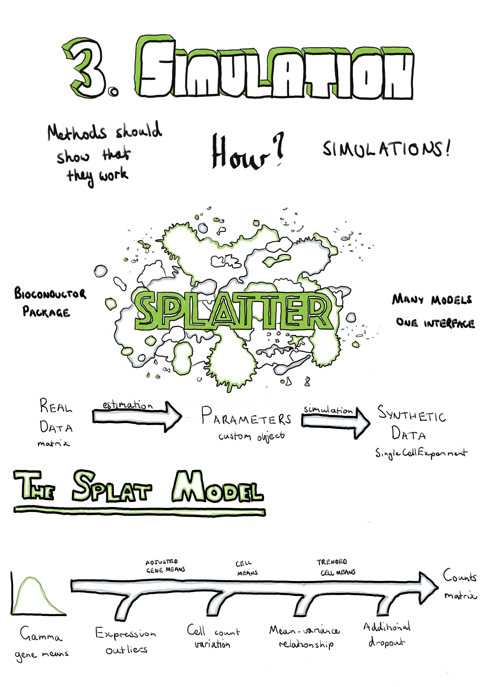

Chapter 3 Simulating scRNA-seq data
“Essentially, all models are wrong, but some are useful.”
— George E. P. Box and Norman R. Draper
Empirical Model-Building and Response Surfaces, 1987

3.1 Introduction
For a computational analysis method to be accepted and used by the community it needs to demonstrate that is is effective at the task it aims to complete. Ideally this can be achieved by evaluating the performance of the method on a real dataset where the results are already known. Unfortunately, in many cases such gold standard datasets are not available. This is particularly true for genomic data where it is difficult to know what the truth is or the known truth is limited to only small sections of the genome. It is possible to create some genomic datasets where the truth is known, for example through carefully performed mixing experiments [175], but these often do not capture the true biological complexity. In many cases the most effective way to evaluate an analysis method during development is by testing it on simulated datasets. Simulations have the additional advantage of being relatively cheap and easy to produce, allowing exploration of a wide range of possible parameters. This is the approach taken by many early methods for scRNA-seq analysis. Unfortunately, these simulations were often not well explained, code for reproducing them was not available and perhaps most importantly they didn’t show that the synthetic datasets were similar to real scRNA-seq data.
This chapter presents Splatter, a software package for simulating scRNA-seq datasets presented in a publication in Genome Biology [201]. Splatter is designed to provide a consistent, easy-to-use interface for multiple previously developed scRNA-seq simulation models. We do this by providing a consistent framework for each model defined by two functions: one which estimates parameters from a real dataset and a second that generates a synthetic dataset using those parameters. Each simulation model has different assumptions and reproduces different aspects of scRNA-seq data, and we explain these differences in our publication. We also present Splat, our own simulation model based on the Gamma-Poisson distribution. This model includes several important aspects of scRNA-seq data including highly expressed outliers genes, differences in library sizes between cells, a relationship between the mean and the variance of each gene and the ability to add a dropout effect linked to gene expression. When designing the Splat simulation our goal was to accurately reproduce scRNA-seq count data rather than test a specific method, with the result being that the model is highly flexible and able to generate a range of scenarios including datasets with multiple groups of cells, batch effects and continuous trajectories.
In the publication we compare how well each simulation reproduces a range of scRNA-seq datasets, including UMI and full-length protocols, different capture methods, and homogenous and complex tissues. We found that the Splat simulation was a good match for some of these datasets across a range of methods, however it was also clear that some models more faithfully reproduced different aspects of the data, particularly for datasets from different sources. The Splatter R package is available for download from Bioconductor (https://bioconductor.org/packages/splatter). Additional files for the publication are provided in Appendix A. Following the publication (Section 3.2) I discuss updates to the software package and provide an updated comparison of the current simulation models (Section 3.3). Vignettes describing the use of Splatter (Appendix B.1) and the parameters of the Splat model (Appendix B.2) are included as appendices, as is the full Splatter manual (Appendix B.3).
3.2 Splatter publication
You can read the Splatter paper here.
3.3 Updates to Splatter
I have continued to develop the Splatter package since publication, improving the package infrastructure and implementing additional simulation models. This section briefly describes changes to the software since the publication and provides an up-to-date comparison of the current simulation models.
The most significant change to the infrastructure of Splatter is switching from using the SCESet object provided by early versions of the scater package as the output of simulation functions, to using the SingleCellExperiment object [202]. This object has been available since mid-2017 and is intended to be the core object for all Bioconductor packages working with scRNA-seq data. It is based on Bioconductor’s SummarizedExperiment object which consists of feature by sample matrices linked to annotation data frames for both features and samples. The SingleCellExperiment object adds features specifically useful for scRNA-seq data, including slots for storing the results of dimensionality reduction techniques and normalisation size factors, as well as conveniently named accessors for information commonly used in analyses. In practical terms, changing objects has not changed how Splatter is used but it does ensure that the results of Splatter simulations are immediately compatible with tools in the Bioconductor ecosystem. Display of the Splatter parameters objects has also been improved, including colouring of output to highlight which parameters have been changed from the default values.
Minor changes have also been made to the Splat simulation model. At the request of users we have modified the parameters controlling additional dropout to allow them to be specified by whole experiment (the previous method), sample batch, cell group or individual cell. This allows users investigating the effects of dropout to simulate datasets where different cell types or batches are differently affected by the dropout phenomenon. Many of the other parameters could already be specified at different levels, but extending this to the dropout parameters provides extra flexibility to the Splat model. In the original model the total number of reads in each cell was sampled from a log-normal distribution, however some users have come across datasets where the normal distribution was a better fit, which caused the Splat estimation procedure to fail. We now allow either the log-normal or normal distributions to be used for this part of the model and the estimation procedure attempts to identify which is more appropriate for each input dataset.
Another model that has seen changes is that from the BASiCS package. The authors of BASiCS have made significant improvements to how they estimate parameters, particularly for datasets without internal spike-ins but where multiple batches exist. BASiCS now uses non-linear regression to capture the trend between gene mean and over-dispersion [110]. This method is now used as part of the default estimation procedure for the BASiCS model within Splatter, resulting in simulations that are a much better match for the original dataset.
I have also added four new simulation models to Splatter, bringing the number of models to 10. These new models are:
- mfa – Simulation of a bifurcating pseudotime trajectory. This simulation can optionally include genes with changes in expression along the trajectory and added dropout [203].
- PhenoPath – Pseudotime trajectory including genes that show differential expression, changes along pseudotime, interaction effects or combinations of these [204].
- ZINB-WaVE – Sophisticated zero-inflated negative-binomial distribution based simulation that includes cell and gene-level covariates [63].
- SparseDC – Simulates a set of clusters across two conditions, where some clusters may be present in only one condition [205].
More details about the models used by these packages are available in the associated publications and package documentation.
3.3.1 Performance of current simulations
To demonstrate the performance of the current simulation models I have repeated some of the analysis from the publication using the Tung dataset [206]. Parameters for each of the models were estimated from a sample of 500 cells from the Tung data and synthetic datasets were produced for each model using these parameters. The time taken for the estimation and simulation steps is shown in Appendix C.1 and versions of the packages used in Appendix C.2. The comparison functions within Splatter were then used to evaluate the differences between the simulated datasets and the real data they were based on. Figure 3.1 summarises this evaluation by showing the ranking of the median absolute deviation (MAD) for each model across a range of metrics.
Figure 3.1: Performance of current Splatter simulations. Synthetic datasets were produced using parameters estimated from 500 random cells from the Tung dataset. Plot shows the rank of median absolute deviation (MAD) from the real dataset on a variety of measures from least similar (blue) to most similar (yellow). The ZINB-WaVE model best reproduces this dataset, followed by the updated BASiCS model. The Splat model also performs well despite having a less sophisticated estimation procedure.
This comparison clearly shows that the ZINB-WaVE model produces the closest match to this dataset. The similarity to the real dataset suggests that the model used by ZINB-WaVE, and particularly the procedure used to estimate the parameters in it, is effective for scRNA-seq data. ZINB-WaVE was originally designed for dimensionality reduction but also has applications in normalisation and differential expression testing [64]. In contrast to the previously published analysis, the BASiCS model is also a very good match, with the improvement in performance coming from the new regression-based estimation method. Unfortunately, the BASiCS normalisation method relies on knowing predefined groups of cells, which limits its usefulness for exploratory experiments. The Splat method does not match the performance of ZINB-WaVE and BASiCS but still does a reasonable job of reproducing this dataset, despite having a much simpler (and quicker) estimation procedure. While producing realistic datasets is extremely important, the real strength of the Splat model lies in its flexibility to simulate many kinds of experiment and its reporting of intermediate values that can be used to evaluate methods. As observed in the publication, we again see that the zero-inflated versions of the Splat and Lun2 models perform worse than the regular versions on this UMI dataset. However, this is in contrast to the extremely good performance of ZINB-WaVE which also uses a zero-inflated model. Taken together these results suggest that both regular and zero-inflated models can be effective for this type of data, if the parameters are estimated correctly.
The other three new simulation models (mfa, PhenoPath and SparseDC) do not do a particularly good job of reproducing this dataset, and in particular mfa produces a dataset with a very different number of counts per cell. These simulations have mostly been designed to demonstrate the analysis methods in these packages and the estimation procedures associated with them are relatively simple. This result underlines that the key to producing a realistic simulation of any kind of data lies not so much in the simulation model itself but in choosing good parameters for that model. As we describe in the publication, there are caveats around the estimation procedures for some of the other models, specifically the Lun model, which only estimates the number of genes and cells, and the scDD model, which is designed for a high-quality filtered dataset unlike the raw dataset used here. Another important consideration is that the comparison shown here is based on a single dataset. As we showed in the publication, different datasets have different biological and technical features which may be reproduced more accurately by alternative simulation models.
Comparing simulations and real datasets is a difficult task. For the comparisons in the Splatter publication we focused on simple summary statistics such as mean gene expression or percentage of zeros per cell and the relationships between them. However, there are other measures that could be considered such as correlation between features or estimated dispersions. Statistical tests can also be used to formally evaluate the similarity of datasets. The countsimQC package [207] can be used to produce a comprehensive report comparing count datasets in a variety of ways and could be a useful tool for any future evaluations of simulation models.